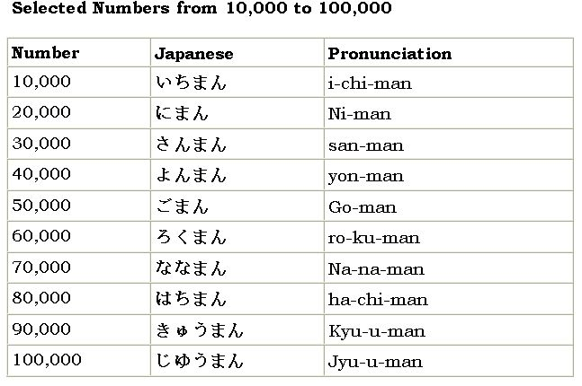

|
| |
Numbers are a great place to start discovering Japanese. Start at 1 and work your way up!
Numbers from 1 to 10:
You can master the art of counting from 1 to 10 right now. Check out below table
The Japanese number system is both cumbersome and logical. The concept of lucky and unlucky numbers is the cumbersome part. The Japanese think that 3, 5, and 7 are lucky numbers and that 4 and 9 are unlucky. So, the next time you give cookies to a Japanese person, give any number except 4 or 9. Now for the logical part: To make any number from 11 to 99, you combine the numbers 1 to 10. For example:
Numbers from 10O to 9,999
To count over 100, keep using the pattern for numbers 11 to 99:
Numbers from 10,000 to 100,000
Unlike English, Japanese has a special digit name for 10,000: man (ma-n). For 50,000, you may want to say go-jyu-sen because your mathematical logic is that 50,000 is go-jyu (50) of sen (1,000), but the Japanese say go-man (go-man; 50,000). Ten thousand is ichi-man (i-chi-man; 10,000), 20,000 is ni-man (ni-man; 20,000), and so on. One-hundred thousand is not 100 sen (thousand) but 10 man, or ju-man. Getting used to it? Check out below table to compare digit names
If you're not sure of your counting abilities just yet, look up the numbers over 10,000 in below table.

Japanese numbers is the simplest part to learn when you start learning Japanese. Just keep the simple logic of combining number into your mind and then you will be able to change any given number into Japanese pronunciation.
| © Copyright Reserved with sitemap | Learn Japanese Free | Our Partners |